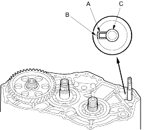
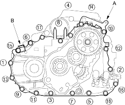

- Align the spring pin (A) on the control shaft (B) with the transmission housing groove (C) by turning the control shaft.
NOTE: Be careful not to squeeze the end of the control shaft tips together when turning the shaft. If the tips are squeezed together it will cause a faulty signal or position due to the play between the control shaft and the switch.

- Install the three dowel pins and a new gasket on the torque converter housing.
- Place the transmission housing on the torque converter housing. Do not install the mainshaft speed sensor before installing the transmission housing on the torque converter housing.
- Install the housing bolts along with the transmission hanger (A) and connector bracket (B), tighten the bolts in two or more steps in the sequence shown to 44 Nm (4.5 kgf/m, 33 lbf/ft).

- Install the mainshaft speed sensor with sensor washer (SLXA transmission).
NOTE: The mainshaft speed sensor washer is equipped on the SLXA transmission; the BMXA transmission does not have the washer.